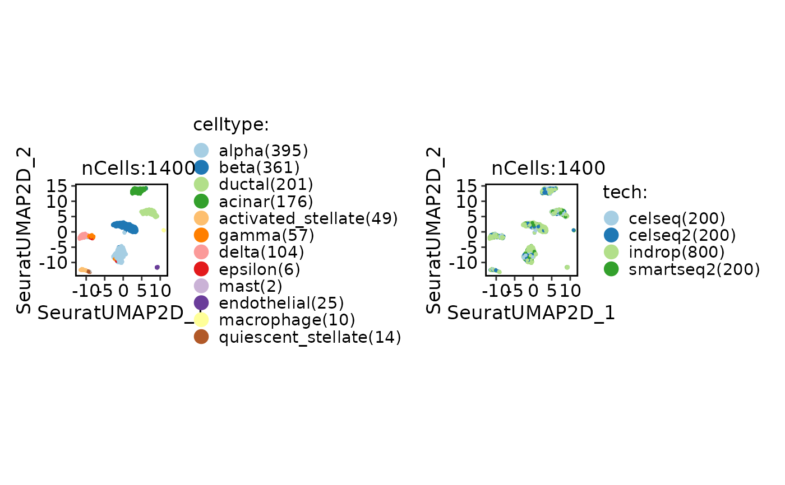
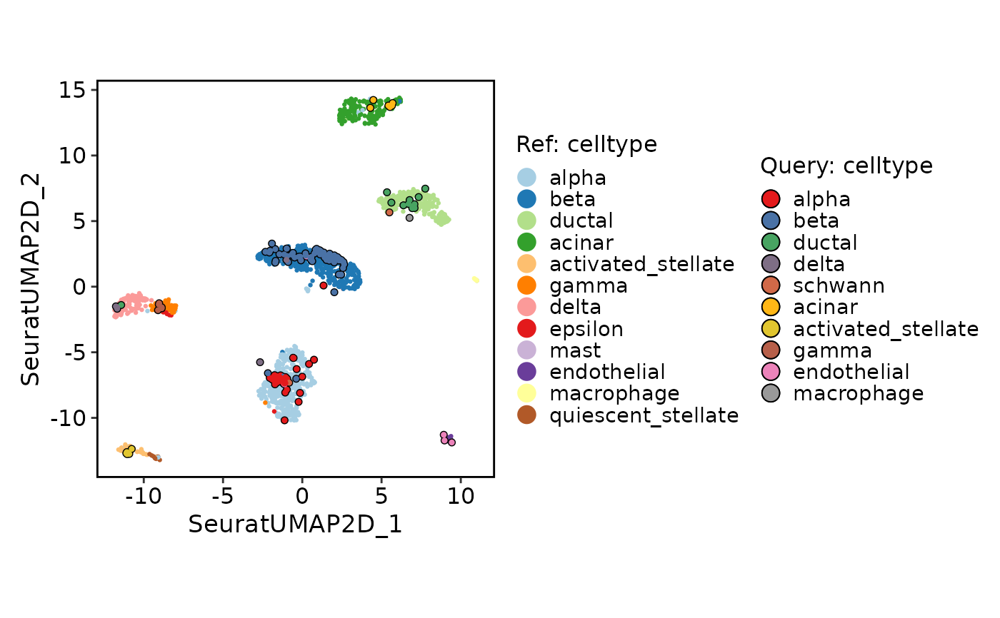

This function generates a projection plot, which can be used to compare two groups of cells in a dimensionality reduction space.
Usage
ProjectionPlot(
srt_query,
srt_ref,
query_group = NULL,
ref_group = NULL,
query_reduction = "ref.embeddings",
ref_reduction = srt_query[[query_reduction]]@misc[["reduction.model"]] %||% NULL,
query_param = list(palette = "Set1", cells.highlight = TRUE),
ref_param = list(palette = "Paired"),
xlim = NULL,
ylim = NULL,
pt.size = 0.8,
stroke.highlight = 0.5
)Arguments
- srt_query
An object of class Seurat storing the query group cells.
- srt_ref
An object of class Seurat storing the reference group cells.
- query_group
The grouping variable for the query group cells.
- ref_group
The grouping variable for the reference group cells.
- query_reduction
The name of the reduction in the query group cells.
- ref_reduction
The name of the reduction in the reference group cells.
- query_param
A list of parameters for customizing the query group plot. Available parameters: palette (color palette for groups) and cells.highlight (whether to highlight cells).
- ref_param
A list of parameters for customizing the reference group plot. Available parameters: palette (color palette for groups) and cells.highlight (whether to highlight cells).
- xlim
The x-axis limits for the plot. If not provided, the limits will be calculated based on the data.
- ylim
The y-axis limits for the plot. If not provided, the limits will be calculated based on the data.
- pt.size
The size of the points in the plot.
- stroke.highlight
The size of the stroke highlight for cells.
Examples
data("panc8_sub")
srt_ref <- panc8_sub[, panc8_sub$tech != "fluidigmc1"]
srt_query <- panc8_sub[, panc8_sub$tech == "fluidigmc1"]
srt_ref <- Integration_SCP(srt_ref, batch = "tech", integration_method = "Seurat")
#> [2023-10-30 01:56:28.215578] Start Seurat_integrate
#> [2023-10-30 01:56:28.225712] Spliting srtMerge into srtList by column tech... ...
#> [2023-10-30 01:56:28.692237] Checking srtList... ...
#> Data 1/4 of the srtList is raw_normalized_counts. Perform NormalizeData(LogNormalize) on the data ...
#> Perform FindVariableFeatures on the data 1/4 of the srtList...
#> Data 2/4 of the srtList is raw_normalized_counts. Perform NormalizeData(LogNormalize) on the data ...
#> Perform FindVariableFeatures on the data 2/4 of the srtList...
#> Data 3/4 of the srtList is raw_counts. Perform NormalizeData(LogNormalize) on the data ...
#> Perform FindVariableFeatures on the data 3/4 of the srtList...
#> Data 4/4 of the srtList is raw_counts. Perform NormalizeData(LogNormalize) on the data ...
#> Perform FindVariableFeatures on the data 4/4 of the srtList...
#> Use the separate HVF from srtList...
#> Number of available HVF: 2000
#> [2023-10-30 01:56:33.394102] Finished checking.
#> [2023-10-30 01:56:34.023049] Perform FindIntegrationAnchors on the data...
#> [2023-10-30 01:56:56.024512] Perform integration(Seurat) on the data...
#> [2023-10-30 01:57:03.682274] Perform ScaleData on the data...
#> [2023-10-30 01:57:03.863717] Perform linear dimension reduction (pca) on the data...
#> [2023-10-30 01:57:04.975341] Perform FindClusters (louvain) on the data...
#> [2023-10-30 01:57:05.077559] Reorder clusters...
#> [2023-10-30 01:57:05.189562] Perform nonlinear dimension reduction (umap) on the data...
#> Non-linear dimensionality reduction(umap) using Reduction(Seuratpca, dims:1-11) as input
#> Found more than one class "dist" in cache; using the first, from namespace 'BiocGenerics'
#> Also defined by ‘spam’
#> Found more than one class "dist" in cache; using the first, from namespace 'BiocGenerics'
#> Also defined by ‘spam’
#> Non-linear dimensionality reduction(umap) using Reduction(Seuratpca, dims:1-11) as input
#> Found more than one class "dist" in cache; using the first, from namespace 'BiocGenerics'
#> Also defined by ‘spam’
#> Found more than one class "dist" in cache; using the first, from namespace 'BiocGenerics'
#> Also defined by ‘spam’
#> [2023-10-30 01:57:17.99902] Seurat_integrate done
#> Elapsed time: 49.78 secs
CellDimPlot(srt_ref, group.by = c("celltype", "tech"))

# Projection
srt_query <- RunKNNMap(srt_query = srt_query, srt_ref = srt_ref, ref_umap = "SeuratUMAP2D")
#> Use the features to calculate distance metric.
#> Detected srt_query data type: raw_normalized_counts
#> Detected srt_ref data type: log_normalized_counts
#> Warning: Data type is unknown or different between srt_query and srt_ref.
#> Use 648 features to calculate distance.
#> Use 'raw' method to find neighbors.
#> Running UMAP projection
#> 01:57:20 Read 200 rows
#> 01:57:20 Processing block 1 of 1
#> 01:57:20 Commencing smooth kNN distance calibration using 1 thread
#> with target n_neighbors = 30
#> 01:57:20 Initializing by weighted average of neighbor coordinates using 1 thread
#> 01:57:20 Commencing optimization for 200 epochs, with 6000 positive edges
#> 01:57:20 Finished
ProjectionPlot(srt_query = srt_query, srt_ref = srt_ref, query_group = "celltype", ref_group = "celltype")
#> Scale for x is already present.
#> Adding another scale for x, which will replace the existing scale.
#> Scale for y is already present.
#> Adding another scale for y, which will replace the existing scale.
